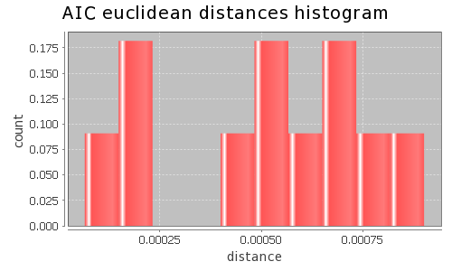
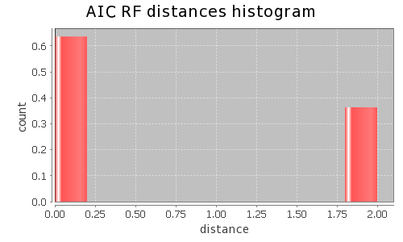
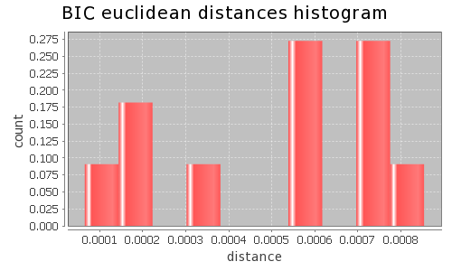
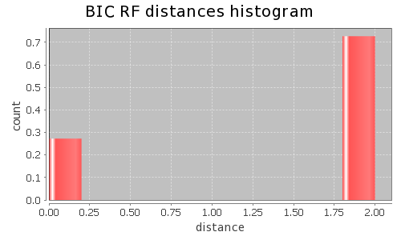

Application Meta
jModeltest 2.1
(c) 2011-onwards D. Darriba, G.L. Taboada, R. Doallo and D. Posada,(1) Department of Biochemistry, Genetics and Immunology
University of Vigo, 36310 Vigo, Spain.
(2) Department of Electronics and Systems
University of A Coruna, 15071 A Coruna, Spain.
e-mail: ddarriba@udc.es, dposada@uvigo.es
Wed May 15 16:26:28 EDT 2013
Linux 2.6.32-279.22.1.el6.x86_64, arch: amd64, bits: 64, numcores: 8
| Citation: | Darriba D, Taboada GL, Doallo R and Posada D. 2012. "jModelTest 2: more models, new heuristics and parallel computing". Nature Methods 9, 772. |
 Back to top
Back to top Settings
Arguments = -d aligned.fasta -g 4 -f -AIC -BIC -a -S BESTInput Alignment: "aligned.fasta"
NumTaxa = 8
Length = 8,650
Phyml version = 3.0
Phyml binary = PhyML_3.0_linux64
Candidate models = 12
number of substitution schemes = 3
including models with equal/unequal base frequencies (+F)
including only models without a proportion of invariable sites
including models with/without rate variation among sites (+G) (nCat = 4)
Optimized free parameters (K) = Substitution parameters + 13 branch lengths + topology
Base tree for likelihood calculations = Maximum Likelihood
Tree topology search operation = Best of {NNI, SPR}
Model Optimization Results
| ID | Name | Partition | -lnL | p | fA | fC | fG | fT | ti/tv | R(a) | R(b) | R(c) | R(d) | R(e) | R(f) | p-inv | shape |
|---|---|---|---|---|---|---|---|---|---|---|---|---|---|---|---|---|---|
| 1 | JC | 000000 | 16464.2339 | 14 | - | - | - | - | - | - | - | - | - | - | - | - | - |
| 2 | JC+G | 000000 | 16464.2350 | 15 | - | - | - | - | - | - | - | - | - | - | - | - | 510.2260 |
| 3 | F81 | 000000 | 16178.4502 | 17 | 0.2998 | 0.1645 | 0.2234 | 0.3123 | - | - | - | - | - | - | - | - | - |
| 4 | F81+G | 000000 | 16178.4515 | 18 | 0.2998 | 0.1645 | 0.2234 | 0.3123 | - | - | - | - | - | - | - | - | 513.0630 |
| 5 | K80 | 010010 | 16370.9794 | 15 | - | - | - | - | 1.3239 | - | - | - | - | - | - | - | - |
| 6 | K80+G | 010010 | 16370.8430 | 16 | - | - | - | - | 1.3310 | - | - | - | - | - | - | - | 5.5240 |
| 7 | HKY | 010010 | 16073.6646 | 18 | 0.2999 | 0.1635 | 0.2218 | 0.3148 | 1.3300 | - | - | - | - | - | - | - | - |
| 8 | HKY+G | 010010 | 16073.4906 | 19 | 0.3000 | 0.1635 | 0.2218 | 0.3147 | 1.3384 | - | - | - | - | - | - | - | 4.6160 |
| 9 | SYM | 012345 | 16368.0540 | 19 | - | - | - | - | - | 1.1253 | 2.7424 | 1.1372 | 0.7834 | 2.7104 | 1.0000 | - | - |
| 10 | SYM+G | 012345 | 16367.8880 | 20 | - | - | - | - | - | 1.1228 | 2.7553 | 1.1371 | 0.7791 | 2.7202 | 1.0000 | - | 4.9280 |
| 11 | GTR | 012345 | 16068.2428 | 22 | 0.3007 | 0.1613 | 0.2232 | 0.3148 | - | 1.4088 | 2.7985 | 0.9591 | 1.0959 | 3.3402 | 1.0000 | - | - |
| 12 | GTR+G | 012345 | 16068.1004 | 23 | 0.3007 | 0.1613 | 0.2232 | 0.3148 | - | 1.4098 | 2.8131 | 0.9570 | 1.0943 | 3.3625 | 1.0000 | - | 5.3190 |
There are 2 different topologies. The following table shows the models supporting each topology and the rank according to each Information Criterion, as well as Robinson-Foulds and Euclidean distances with the tree of the best-fit model.
| ID | Models | Topology | AIC | BIC | AICc | DT | |
|---|---|---|---|---|---|---|---|
| 0 |
JC+G F81+G K80 K80+G HKY+G SYM+G GTR GTR+G
|
RANK | 0 | 1 | - | - | |
| Weight | 0.8638 | 0.0126 | - | - | |||
| RF | 0 | 2 | - | - | |||
| AVG Distance | 4.4227e-04 | 4.4695e-04 | - | - | |||
| Distance VAR | 7.9030e-08 | 6.7910e-08 | - | - | |||
| 1 |
JC F81 HKY SYM
|
RANK | 1 | 0 | - | - | |
| Weight | 0.1362 | 0.9874 | - | - | |||
| RF | 2 | 0 | - | - | |||
| AVG Distance | 5.0261e-04 | 5.1673e-04 | - | - | |||
| Distance VAR | 6.9825e-08 | 9.4758e-08 | - | - |
AIC Selection Results
Model selected
| Model | GTR | ||
|---|---|---|---|
| partition | 012345 | ||
| -lnL | 16068.2428 | ||
| K | 22 | ||
| freqA | 0.3007 | R(a) | 1.4088 |
| freqC | 0.1613 | R(b) | 2.7985 |
| freqG | 0.2232 | R(c) | 0.9591 |
| freqT | 0.3148 | R(d) | 1.0959 |
| ti/tv | - | R(e) | 3.3402 |
| R(f) | 1.0000 | ||
| p-inv | - | gamma | - |
Best model tree
(seq0:0.00000001,se_0:0.00000001,((seq1:0.00000001,se_1:0.00000001):0.02088119,(seq2:0.00000001,(seq3:0.00000001,(se_3:0.00000001,se_2:0.00000001):0.00000001):0.00000001):0.02264467):0.06147184);
Display best model tree in PhyloWidget
| Model | -lnL | K | AIC | delta | weight | cumWeight |
|---|---|---|---|---|---|---|
| GTR | 16068.2428 | 22 | 32180.4857 | 0.0000 | 0.5646 | 0.5646 |
| GTR+G | 16068.1004 | 23 | 32182.2008 | 1.7152 | 0.2395 | 0.8041 |
| HKY | 16073.6646 | 18 | 32183.3291 | 2.8434 | 0.1362 | 0.9404 |
| HKY+G | 16073.4906 | 19 | 32184.9813 | 4.4956 | 0.0596 | 1.0000 |
| F81 | 16178.4502 | 17 | 32390.9004 | 210.4147 | 0.0000 | 1.0000 |
| F81+G | 16178.4515 | 18 | 32392.9029 | 212.4173 | 0.0000 | 1.0000 |
| K80 | 16370.9794 | 15 | 32771.9588 | 591.4731 | 0.0000 | 1.0000 |
| K80+G | 16370.8430 | 16 | 32773.6859 | 593.2003 | 0.0000 | 1.0000 |
| SYM | 16368.0540 | 19 | 32774.1081 | 593.6224 | 0.0000 | 1.0000 |
| SYM+G | 16367.8880 | 20 | 32775.7759 | 595.2903 | 0.0000 | 1.0000 |
| JC | 16464.2339 | 14 | 32956.4677 | 775.9820 | 0.0000 | 1.0000 |
| JC+G | 16464.2350 | 15 | 32958.4700 | 777.9843 | 0.0000 | 1.0000 |
| -lnL: | negative log likelihod |
| K: | number of estimated parameters |
| AIC: | Akaike Information Criterion |
| delta: | AIC difference |
| weight: | AIC weight |
| cumWeight: | cumulative AIC weight |
Confidence interval
There are 12 models in the 100.00% confidence interval:
GTR GTR+G HKY HKY+G F81 F81+G K80 K80+G SYM SYM+G JC JC+G

Euclidean distances histogram from each model optimized tree to GTR tree.
Euclidean distances histogram from each model optimized tree to GTR tree.

Robinson-Foulds distances histogram from the different topologies to GTR topology.
Robinson-Foulds distances histogram from the different topologies to GTR topology.
Model Averaged Phylogeny
| Selection criterion | AIC |
|---|---|
| Confidence interval | 100.00% |
| Consensus type | 50% majority rule |
(seq0:0.000000,se_0:0.000000,((seq1:0.000000,se_1:0.000000)1.00:0.020881,(seq2:0.000000,(seq3:0.000000,(se_3:0.000000,se_2:0.000000)1.00:0.000000)0.86:0.000000)1.00:0.022645)1.00:0.061472);
Display consensus tree in PhyloWidget
BIC Selection Results
Model selected
| Model | HKY | ||
|---|---|---|---|
| partition | 010010 | ||
| -lnL | 16073.6646 | ||
| K | 18 | ||
| freqA | 0.2999 | R(a) | - |
| freqC | 0.1635 | R(b) | - |
| freqG | 0.2218 | R(c) | - |
| freqT | 0.3148 | R(d) | - |
| ti/tv | 1.3300 | R(e) | - |
| R(f) | - | ||
| p-inv | - | gamma | - |
Best model tree
(seq0:0.00000001,se_0:0.00000001,((seq1:0.00000001,se_1:0.00000001):0.02089889,((seq3:0.00000001,seq2:0.00000001):0.00000001,(se_3:0.00000001,se_2:0.00000001):0.00000001):0.02260731):0.06152192);
Display best model tree in PhyloWidget
| Model | -lnL | K | BIC | delta | weight | cumWeight |
|---|---|---|---|---|---|---|
| HKY | 16073.6646 | 18 | 32310.5048 | 0.0000 | 0.9874 | 0.9874 |
| HKY+G | 16073.4906 | 19 | 32319.2223 | 8.7175 | 0.0126 | 1.0000 |
| GTR | 16068.2428 | 22 | 32335.9226 | 25.4178 | 0.0000 | 1.0000 |
| GTR+G | 16068.1004 | 23 | 32344.7031 | 34.1983 | 0.0000 | 1.0000 |
| F81 | 16178.4502 | 17 | 32511.0107 | 200.5060 | 0.0000 | 1.0000 |
| F81+G | 16178.4515 | 18 | 32520.0786 | 209.5738 | 0.0000 | 1.0000 |
| K80 | 16370.9794 | 15 | 32877.9385 | 567.4337 | 0.0000 | 1.0000 |
| K80+G | 16370.8430 | 16 | 32886.7310 | 576.2262 | 0.0000 | 1.0000 |
| SYM | 16368.0540 | 19 | 32908.3490 | 597.8443 | 0.0000 | 1.0000 |
| SYM+G | 16367.8880 | 20 | 32917.0822 | 606.5775 | 0.0000 | 1.0000 |
| JC | 16464.2339 | 14 | 33055.3821 | 744.8773 | 0.0000 | 1.0000 |
| JC+G | 16464.2350 | 15 | 33064.4497 | 753.9449 | 0.0000 | 1.0000 |
| -lnL: | negative log likelihod |
| K: | number of estimated parameters |
| BIC: | Bayesian Information Criterion |
| delta: | BIC difference |
| weight: | BIC weight |
| cumWeight: | cumulative BIC weight |
Confidence interval
There are 12 models in the 100.00% confidence interval:
HKY HKY+G GTR GTR+G F81 F81+G K80 K80+G SYM SYM+G JC JC+G

Euclidean distances histogram from each model optimized tree to HKY tree.
Euclidean distances histogram from each model optimized tree to HKY tree.

Robinson-Foulds distances histogram from the different topologies to HKY topology.
Robinson-Foulds distances histogram from the different topologies to HKY topology.
Model Averaged Phylogeny
| Selection criterion | BIC |
|---|---|
| Confidence interval | 100.00% |
| Consensus type | 50% majority rule |
(seq0:0.000000,se_0:0.000000,((seq1:0.000000,se_1:0.000000)1.00:0.020899,((se_3:0.000000,se_2:0.000000)1.00:0.000000,(seq3:0.000000,seq2:0.000000)0.99:0.000000)1.00:0.022607)1.00:0.061522);
Display consensus tree in PhyloWidget